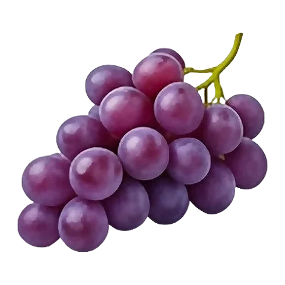
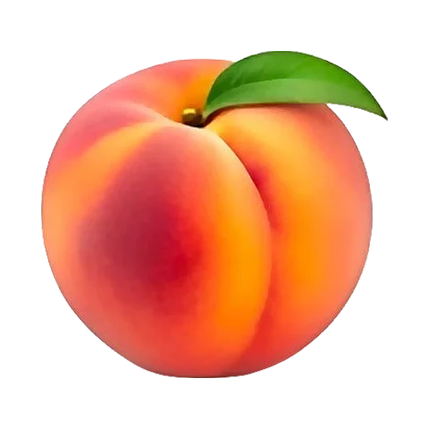
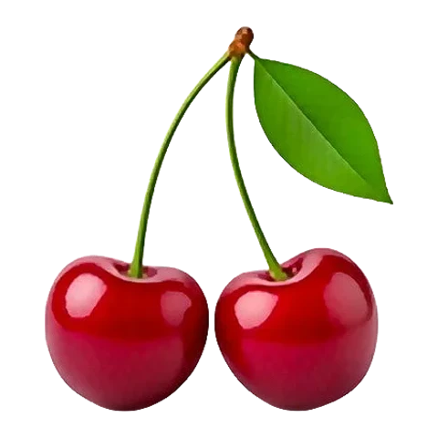
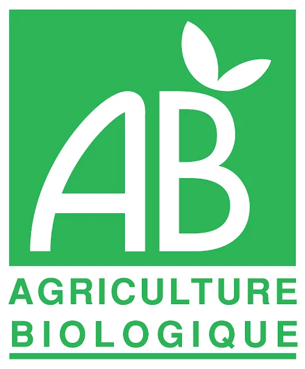
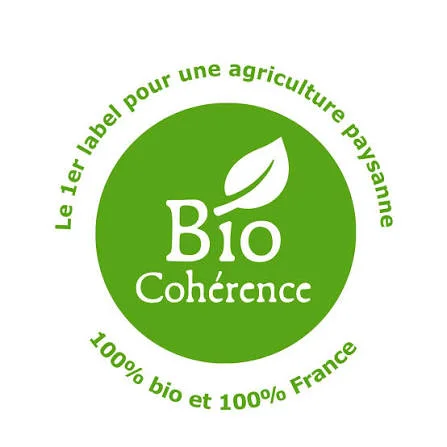
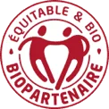

オーガニックを上手に選ぼう
オーガニックってなあに？
なんでもオーガニックで買う必要がある？いいえ、そんなことはありません。オーガニックが本当に違いを生む果物と野菜、安く買うコツ、そしてお店で見分けたいラベルをご紹介します。

トム：オーガニックの果物や野菜は、化学の農薬や化学肥料を使わずに育ったものだよ。見分けるには、緑のABマークか、星でできた小さなヨーロッパの葉っぱのマークをさがしてね。ぼくが教えてあげる！
オーガニックにする？しない？いちばん大事なのはここ
すべてをオーガニックで買う必要はありません。皮ごと食べる皮の薄い果物は農薬がいちばん多く使われ、厚い皮に守られたものや農薬をあまり使わずに育つものは、ずっと少なくなります。
オーガニックで買いたいもの
 いちご
いちご
ぶどう りんご
りんご 洋なし
洋なし
桃
さくらんぼ- セロリ
- レタス
- フレッシュハーブ
皮が薄く、まるごと食べるうえ、ひと季節に何度も農薬を使うことが多いものです。
慣行栽培でもだいたい大丈夫
むいて取る厚い皮があるもの、または農薬をあまり使わない作物です。残留農薬が見つかることはほとんどありません。
少ない予算でオーガニックを買うには
少ない予算でオーガニックを取り入れる、5つのかんたんな習慣。
- 旬のものを 最盛期にはオーガニックの農産物がたくさん出回り、値段も慣行栽培のものに近づきます。 カレンダーを見る →
- マルシェで オーガニックの生産者が仲介なしで直接売っています。マルシェの終わりごろには、売れ残りを値引きしてもらえることもよくあります。 マルシェを探す →
- 量り売りで ドライフルーツ、豆類、穀物など。包装がないぶん安く、必要な分だけ買えます。
- 野菜の定期便（AMAP）で 地元の生産者との定期契約。毎週オーガニック野菜の箱が届き、値段は一年中同じです。
- 農場で 直接買えば中間マージンがかかりません。農場の直売所や近くの生産者から買うのが、オーガニックをいちばん安く手に入れる方法であることも多いです。
オーガニック、地元産、旬：何が違うの？
3つは異なる約束で、互いを補い合います。理想は、3つがそろっていることです。
オーガニック認証
フランスのお店では、いくつものマークが並んでいます。どれも化学合成農薬・化学肥料を使わない農業を保証していますが、なかには産地や公正さ、栽培方法についてさらに厳しい基準を設けているものもあります。
-

AB — Agriculture Biologique（有機農業） フランスのマーク フランスでいちばん知られたオーガニックラベル。原材料の95%以上がオーガニックで、化学合成農薬や遺伝子組み換えを使っていないことを保証します。基準はEUのマークと同じです。 - ユーロリーフ EUのオーガニックマーク 欧州連合で販売される包装済みのオーガニック製品すべてに表示が義務づけられています。認証機関のコードと、原材料の産地（EU、EU外）が記されています。
-

Bio Cohérence フランスの団体ラベル EUの基準よりさらに厳しいラベル。原材料は100%オーガニック、農場全体がオーガニック、フランス産を優先し、社会的な条件も求めています。 - Nature & Progrès 団体ラベル 1964年設立の、オーガニックの草分け的存在。ABより厳しい基準を持ち、生産者と消費者自身がチェックします（参加型保証システム）。
- Demeter バイオダイナミック農法のラベル バイオダイナミック農法：農場をひとつの生き物と考え、自然の調合剤を使い、月のリズムに合わせて育てます。まずオーガニック認証を受けていることが条件です。
-
 Bio Équitable en France
オーガニック＆フェアトレードのラベル
フランス国内のオーガニックの流通を対象に、生産者への公正な価格、複数年の契約、共同での運営を保証します。
Bio Équitable en France
オーガニック＆フェアトレードのラベル
フランス国内のオーガニックの流通を対象に、生産者への公正な価格、複数年の契約、共同での運営を保証します。
-

Biopartenaire オーガニック＆フェアトレードのラベル フランス国内と海外で、オーガニックとフェアトレードを組み合わせたラベル。生産者への公正な報酬と、長く続く取引関係を約束します。
オーガニック農家のひみつ
化学のくすりを使わずに、どうやって果物や野菜を守るの？しぜんの力をかりるんだ！
- テントウムシ くすりのかわりに、オーガニック農家はテントウムシに来てもらうよ。1ぴきで1日に何十ぴきものアブラムシを食べちゃうんだ！
- たい肥 野菜の皮や動物のふんが、しぜんの肥料になるよ。ミミズが大好きで、土を元気にしてくれるんだ。
- 場所をかえる 毎年、野菜を畑のちがう場所に植えるよ。そうすると、野菜が大好きな小さな虫たちが見つけられないんだ。
- 根元にわら ざっ草が生えないように、植物のまわりにわらをしいたり、ざっ草を手でぬいたりするよ。
お店でたんていになろう
買い物のとき、ラベルにこの2つのマークがあるかさがしてみてね。オーガニックの商品をいくつ見つけられるかな？
ほんと？うそ？
オーガニックについてよくある5つの思いこみ。クリックすると答えが見られます。

トム：きみの番だよ！答えを考えてから、クリックしてたしかめてね。